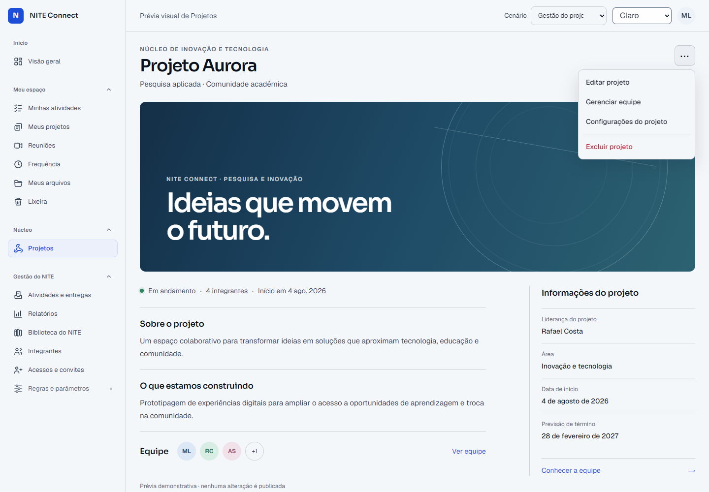
Editar, equipe, configurações e excluir são apresentados conforme as capacidades do cenário.
Comparação entre as referências Mobbin inspecionadas e a prévia demonstrativa. A implementação preserva o App Shell original; ações e alterações ficam restritas ao ambiente de demonstração.

Editar, equipe, configurações e excluir são apresentados conforme as capacidades do cenário.
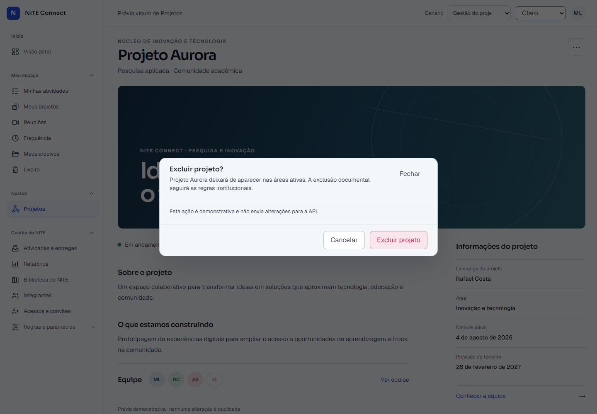
A exclusão pede confirmação e informa as regras documentais; nenhuma API é chamada na prévia.
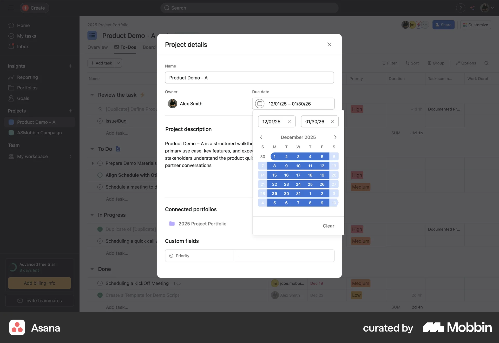
Modal centrado, formulário de detalhes e ação contextual no rodapé.
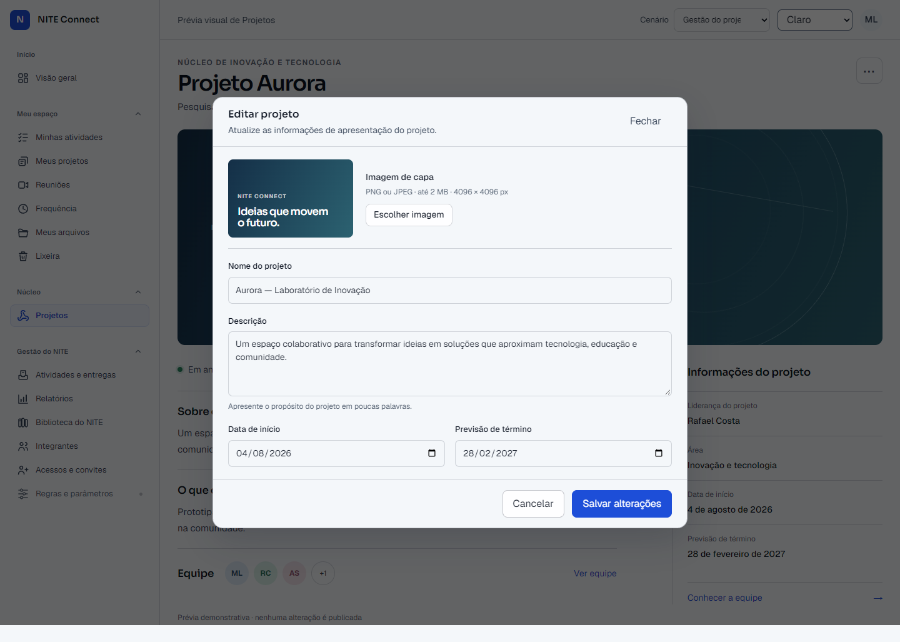
Capa, nome, descrição, datas e rodapé com Cancelar e Salvar alterações.
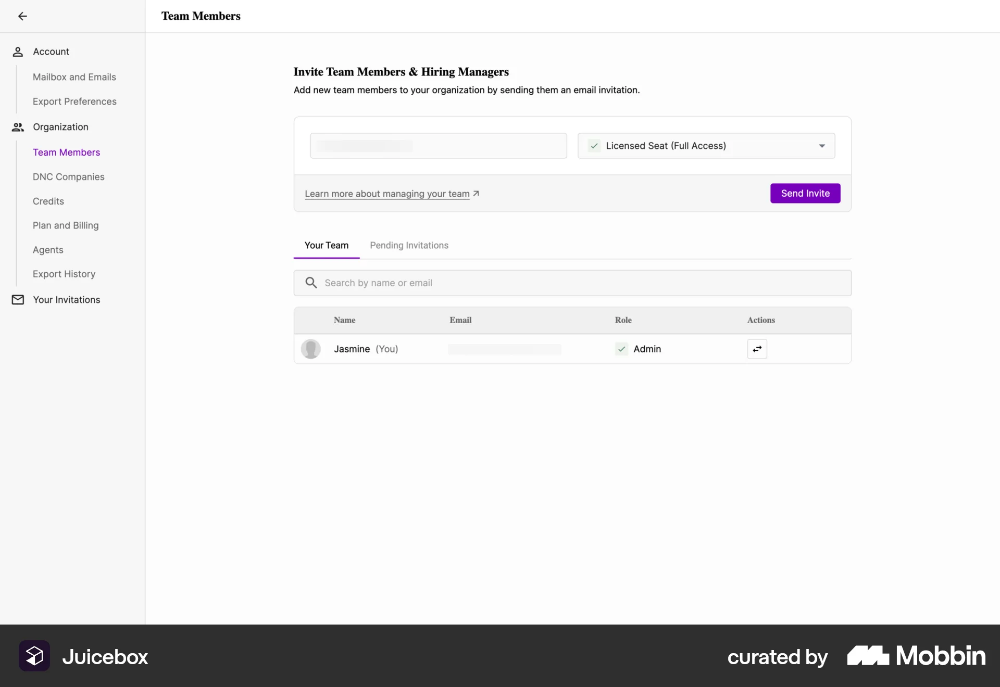
Abas de equipe e convites, pesquisa, tabela e ações por integrante.
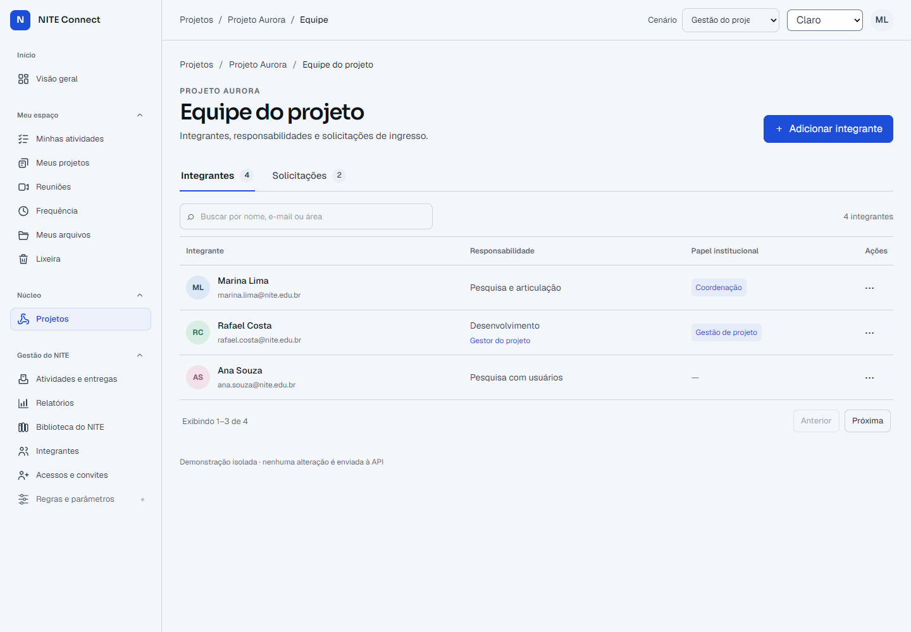
Breadcrumb, tabs, busca, papéis separados e paginação.
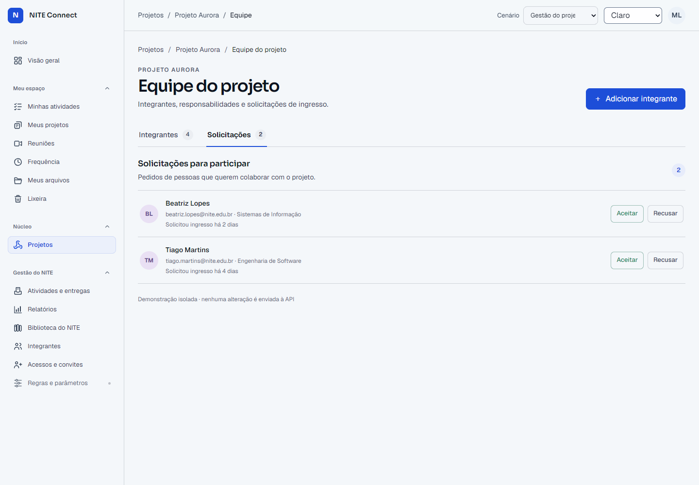
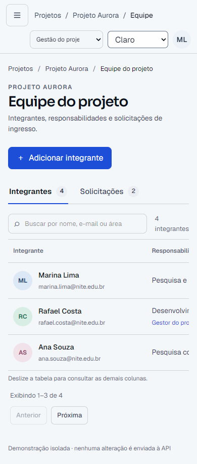
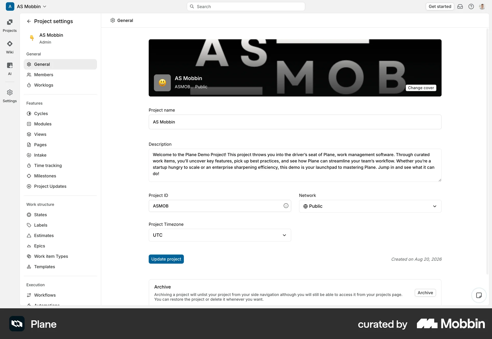
Seções de configuração em fluxo contínuo e hierarquia de settings.
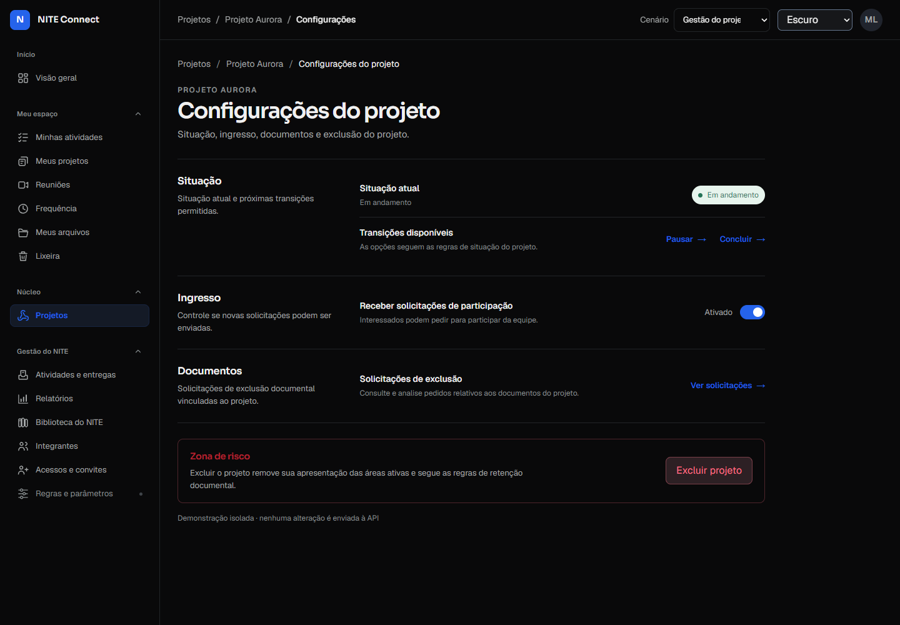
Situação e transições disponíveis, ingresso, solicitações documentais e Danger Zone.
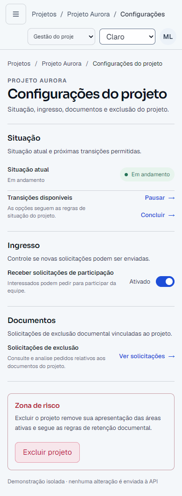
project-administration-preview.test.tsx
Componentes da prévia, navegação e rota demo.
next typegen + tsc --noEmit; apresentação, menu, edição, equipe, solicitações e configurações. Viewports desktop 1440 px e mobile 390 × 844; tema claro e escuro verificados.